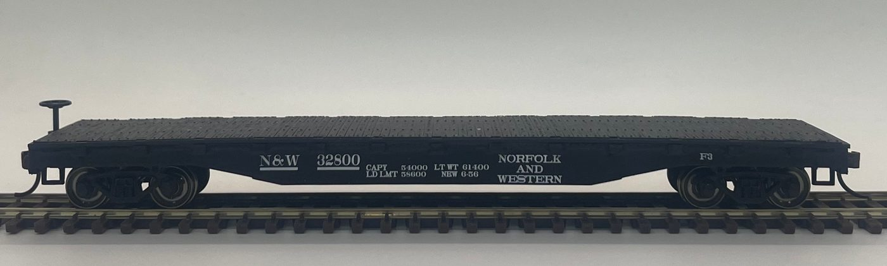
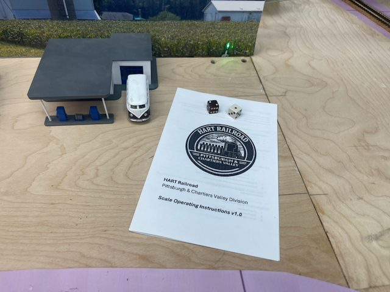
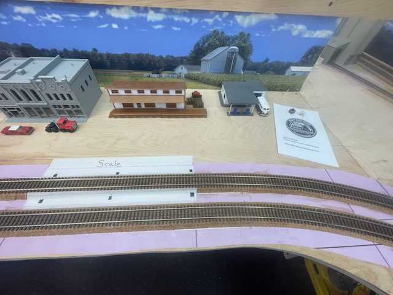
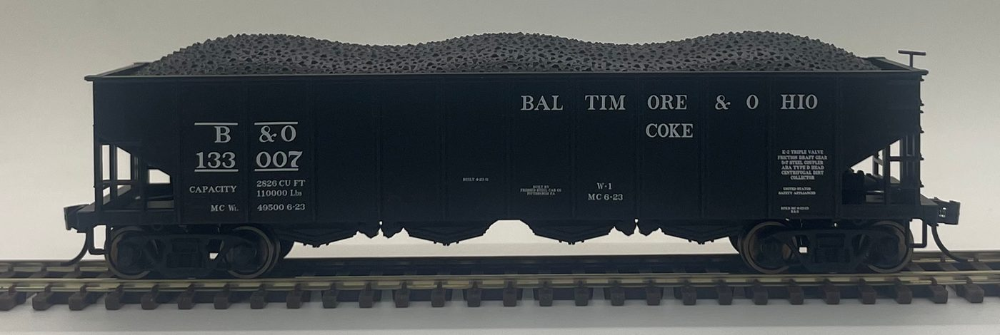
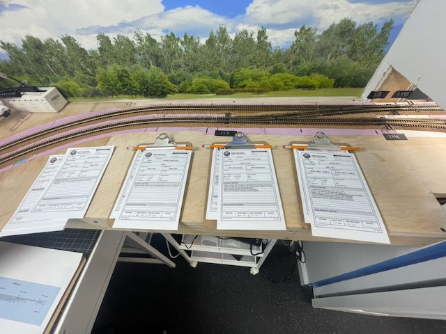

Setting Up Car Movement on the HART Railroad
Building repeatable session traffic with STS on a Pittsburgh-area ops layout: from Post-it flags and paper cards, through a track scale and a saved session recipe, to hundreds of simulated sessions that tuned the traffic.
My layout is the HART Railroad, Pittsburgh & Chartiers Valley Division — a Pittsburgh-area shortline centered on Neville Island. It interchanges with CSX and POHC and works mainland staging and yards at Scully, Demmler, McKees Rocks, and McKeesport.
On the island are the industries crews switch — Aristech Plastics, Calgon Carbon, A. Stucki Company, Ferrellgas, and Kosmos Cement — plus South Yard for classification and interchange. Nearby, Shenango Coke Works loads coke for steel customers such as U.S. Steel.
The goal was simple: operations that feel like a real railroad, not a pile of car cards.
01From Post-its to STS
Before any traffic software, the first problem was physical: I needed car cards and waybills for HART. For the first session we used Post-it flags — obviously temporary.
I already had roster data for the fleet, and I used AI to help build the cards, matching photos to that roster by running OCR on the images and comparing reporting marks. The same pass also pulled stencil data off the cars — built dates and weights among them — and drafted waybill-side information for the industries and moves on the layout: rolling stock, locations, commodities, and the shipments that tie them together.

When it came time to pick a traffic system, the choice was STS — the Shipper-driven Traffic Simulator1 — rather than JMRI Operations Pro. STS matched how the prototype moves cars: shippers create demand, the railroad fills it with cars, and the paperwork follows the move.
How STS moves a car
- Shipperscreate demand
- The railroadfills it with cars
- The paperworkfollows the move
It could already generate traffic, build lists, and support a multi-session railroad, so HART could build on that foundation instead of starting from scratch. The card and waybill data became the seed — shipments, commodities, locations, and the car roster — so the digital railroad matched the paper we had started.
That work carried forward: today we still use the refined data coming back out of STS to manage our waybills.
02An ops desk you can read
Once STS held the HART data, the next gaps showed up at the desk.
The gaps
- I needed to know what was going on as I went through a session, and it was hard to tell without digging through screens.
- Filling car orders still meant too much manual assignment when the matches were obvious.
- Generate, fill, pick up, and set out took too many clicks — more like four separate clipboards than one train sheet.
So I put live session stats on the operations menu and cleaned up the ops dashboard.
The biggest day-to-day win was auto-assign on Fill Car Orders: STS can match cars to open orders in bulk, including reposition empties that used to get skipped.
Around that, I reworked the operations layout and menu navigation so those pages flowed better, with filtering and counts added in the dropdowns. The Cars database page got a matching overhaul.
03Building the track scale
I wanted something unique on HART: weighing cars mid-move, not just at origin or destination. The stencil weights we had already pulled for the car cards suddenly had somewhere to go. The first session tried dice on the aisle to simulate a scale — random enough, but it never caught on with the operators.


What I wanted in STS was that mid-shipment decision: coke leaves Shenango, hits the South Yard scale on the west lead, and either continues outbound or comes back to reload.
The mid-shipment decision
STS had no native way to do that, and I did not want a HART-only feature hard-wired into core, so I built it as a plugin2.

Calibration became its own step in the recipe, and that mattered more than I expected. The scale drifts between sessions unless you recalibrate.
We did not have AAR General Information Bulletin No. 5 on proper hopper balance3 when we built this. Finding it later confirmed the same idea: overloaded and unbalanced cars are unsafe, railroads catch them on the scale, and bad loads get switched out to reload.
What we put on HART was not just a layout novelty — it represents a real-world operation.
04After Session #2: a session recipe
We ran STS on the layout for the first time during Session #2. On paper and in the simulator, things went well. In the aisle we learned choreography the virtual railroad could not fully capture — which jobs overlap, who waits on whom, when a train can leave South Yard or clear the bridge, and how Island locals and mainland staging actually share the railroad.
On a still-new layout, that made it clear: the next session could not depend on remembering every click and timing cue.
Reproducing a session in STS still meant working through generate, fill, assign, switch lists, and reports by hand. Miss a step and the paperwork diverged. Fine for occasional play; not fine for tuning traffic or handing someone else a repeatable ops package.
So I built a workflow editor and paired it with a Session Browser. The editor saves the session as a recipe — generate, fill, assign, cancel, switch lists, reports, and optional scale steps — with parameters I can see and reorder.
What goes in a recipe
- Generate
- Fill
- Assign
- Cancel
- Switch lists
- Reports
- Scale steps (optional)
Traffic settings live there too:
- new orders per session;
- when automatic generate should pause on a high unfilled backlog;
- which commodities stay out of the automatic lottery on their own gated steps;
- and the if/then gates for coke.
That recipe was key for choreography: jobs overlap where they share the railroad, yet each can still run independently when the crew board or schedule calls for it.
The Session Browser is where I open what the recipe produced — overview, trains, switch lists, waybills, and reports — including printing filters and locked backups so a good baseline does not get restarted by accident.
05Proper balance of cars
Even with a saved recipe, the traffic still had to feel right — and for a while it did not. We were seeing too many orders, yards that got stuck, and cars that were not moving the way we expected.
The roster is slim; there was no spare fleet to throw at every industry. Tuning meant maximizing what we own: cars earning their keep, work spread across jobs, and steady movement instead of a few cars bouncing back and forth.
That meant watching the whole cycle — empty reassignments, pending orders, loads and unloads — not just how many new orders appeared.
Coke was the sharp case: run wild and it crowds everything else; starve it and the Island and Shenango story goes flat.
06Simulate, score, adjust
Comparing settings by hand was never going to work. Each idea needed many simulated sessions, a fair starting point, and a way to see whether the railroad got better or quietly worse somewhere else.
The workflow became a partnership: I set the goals and judged what felt right for HART; an AI coding assistant ran the heavy iteration — restoring locked baselines, replaying recipes, sweeping gates and intervals, scoring results, and looping again when a fix for one commodity pushed pressure onto another — using the HART simulation and seed tooling we keep alongside STS4.
The loop
- Restorelocked baselines
- Replayrecipes
- Sweepgates and intervals
- Scoreresults
- Loop againwhen a fix for one commodity pushed pressure onto another
We did not chase maximum volume. After each multi-session sweep we asked:
- whether backlog stayed stable;
- whether coke and other priority moves still worked when gated;
- whether empties and scale work dried up;
- and whether later sessions still looked operable.
When two settings looked similar on counts, we kept the one closer to how HART clears.
Priority stayed practical
- Backlog first
- Gated commodities next
- then empties
- scale reloads
- and job order
The campaign was large — many scenarios of ten to twenty sessions each, often across several random seeds. That adds up to hundreds of simulated operating sessions, and likely past a thousand with re-runs: more than a person can fairly compare at the keyboard, but a natural fit for a simulate–score–adjust loop.
- 10–20
- sessions in each scenario
- Several
- random seeds, often, per scenario
- Hundreds
- of simulated sessions, likely past a thousand with re-runs
The saved recipe and locked baselines made those comparisons honest.
07Where we stand
The through-line was never the software for its own sake. It was turning a new railroad and a slim roster into sessions crews want to work — from Post-it flags and paper cards, through STS and the tools we built around it, to traffic that stays interesting without flooding the aisle.
Along the way I have learned a lot — about railroading, about operations, and about AI. What we achieved here took a few weeks of focused work; without these tools it could easily have taken months, if not longer. I am amazed at what I can do with them, and I look forward to how they will keep improving the work I do for the layout.

Ahead, the job is still to keep operating and keep listening. Future sessions will show what still snags a crew and where the traffic still needs a nudge. The measure of success stays simple:
Every operator who shows up should find interesting work, clear paper, and a railroad that feels a little more real than the session before.
NotesReferences
- Shipper-driven Traffic Simulator (STS) Facebook group (official community and support). facebook.com/groups/541367466453352
- HART / STS Docker packaging and Track Scale plugin work (GitHub). github.com/lnevo/sts-docker
- Association of American Railroads, Operations and Maintenance Department, Damage Prevention and Freight Claim Services. General Information Bulletin No. 5, Proper Balancing of Hopper Cars — Overloaded or Unbalanced Hopper Cars Are Unsafe. Washington, D.C., August 1993. Available from CSX.
- HART STS helpers, seed, and simulation tooling (GitHub). github.com/lnevo/sts-docker-helpers
More: Scale operating instructions · Rolling stock · Industries · Behind the Scenes